Binary formats are not human readable, meaning we must parse them using code to discover the information inside. We use a library called Swift Binary Parsing to do this.
Resource: Getting Started with BinaryParsing
There are two ways metadata is stored in WinMD files:
Tables (arrays of records)
Heaps
Heaps are unstructured data regions, so information can only be extracted if you know its position and size within the heap.
Tables have a variable number of rows, which have a defined number of columns. Tables, rows, and columns are all packed consecutively. Each table represents a concept in an API; for example, the ‘Field’ table represents a field in a type definition, while the ‘FieldLayout’ table represents the layout of fields in a type.

There are two types of columns in table rows:
Constant - A literal value or bitmask
Index - An index to a row in the same or another table.
A bitmask constant is a value that stores
There are two types of indices: